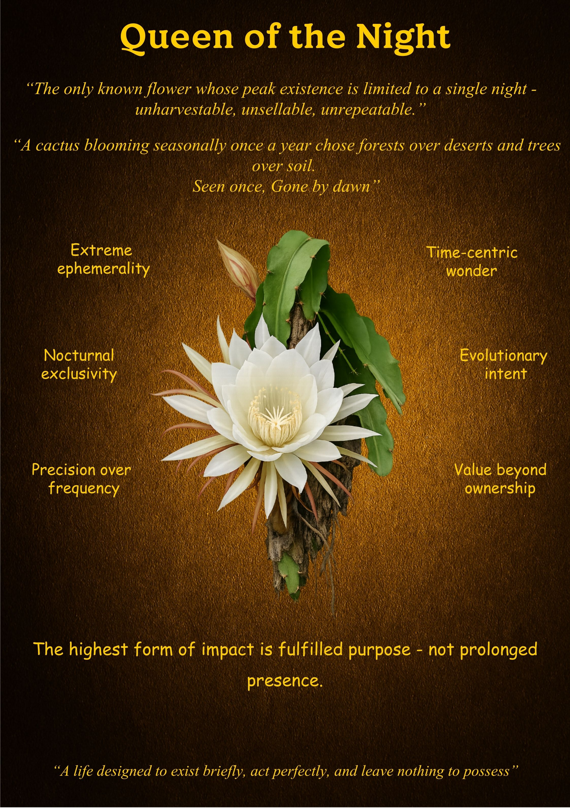

Queen of the Night
"Seen once, Gone by dawn."
What is Unique
The Queen of the Night is a biological paradox. It is a cactus that has abandoned the desert for the forest and the soil for the trees. Most uniquely, it is the only known flower whose peak existence is strictly limited to a single night. It is inherently "unharvestable, unsellable, and unrepeatable." By the time the world wakes to claim it, it has already returned to the shadows, making it a wonder that can only be witnessed, never owned.
Overall Synthesis
This exhibit explores the "Ethics of Impact." In a world that prizes longevity and constant visibility, the Queen of the Night proves that a few hours of absolute perfection can outweigh decades of mediocrity. It represents a life designed to fulfill a singular, vital purpose with total intensity, rather than diluting its essence for the sake of a prolonged presence.
Its Functioning Systems
Principles & Wisdom
The Queen of the Night teaches us that **the highest form of impact is fulfilled purpose—not prolonged presence.** We often equate success with "staying power," but the bloom reminds us that some of the world's most vital contributions are those that occur briefly and act perfectly. It challenges us to build lives and projects that "leave nothing to possess," but everything to remember. Value is not in the duration, but in the depth of the act.